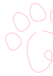
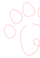

Adote um gato
Ao adotar um gatinho você estará dando uma chance de uma vida longa e feliz ao seu novo amiguinho, e pode ter certeza que ele irá retribuir com muito amor e miados de alegria.

Adulto para adoção

Adulto para adoção

Adulto para adoção

Implementado pela prefeitura de Cornélio Procópio no ano de 2020, a instituição já atendeu centenas de animais no local desde a fundação.
ONG sem fins lucrativos, que tem por missão a proteção da integridade física e
bem-estar dos animais da região.
Não possui sede física, todos os animais resgatados são encaminhados para
clínicas particulares para realização dos adequados tratamentos até a total recuperação.
Após recuperação serão castrados, vacinados e disponibilizados para procedimento de adoção.
Nós somos um grupo de estudantes apaixonados por programação, e ainda mais por gatos!
Esse projeto visa dar um fácil acesso aos diversos gatinhos esperando por um lar na cidade de Cornélio Procópio - PR.
A iniciativa do site surgiu à partir de um projeto avaliativo de uma disciplina de programação para web da Universidade Federal do Paraná, mas acreditamos que podemos ir muito além e realmente mudar a vida tanto de humanos quanto de nossos gatinhos :D
 
